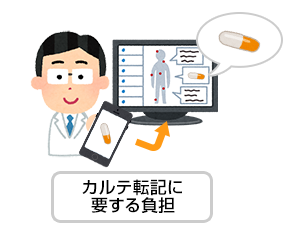

診療支援ツール整備プロジェクト 第1弾
目次 見出しをクリックすると詳細へ移動します
解決したい課題
日本の医療において、「救急車のたらい回し」が問題となっている。救急搬送が必要な患者を病院が受け入れないことから、「なぜ、病院は困った患者を受け入れないのか」という否定的なニュアンスで用いられることが多い。しかし、少し調べてみると、この問題は、「困った患者を病院が受け入れない」のではなく、「困っている患者ですら病院側には受け入れる余力がない」ために生じていることが分かる。こうした状況は「医療崩壊」として知られている。
このように医療現場が苦境に喘ぐ背景に、救急医療に限らず、日本の医療現場における様々な非効率がある。たとえば、自分で内服している薬について把握をしていない患者は少なくない。とりわけ、高齢者は内服している薬の種類も多いため、診察する医者側も確認に時間を要する。こうした問題を軽減するために「お薬手帳」が制度化されたが、そのお薬手帳を持参しないまま外来を受診する患者は意外に多い。そして、患者がお薬手帳を持参すれば解決するかと言うと、次の問題が待っている。
ジェネリック医薬品とは、特許が切れた医薬品を後発メーカーが安価に販売するいわば「コピー商品」で、医療費削減の観点から国が利用促進を図っている医薬品である。これらは、基本的に「オリジナル」と同じ用量、用法で用いることができるが、残念ながら名称が異なる。そのために、「お薬手帳」を持参していたとしても、医師は一個一個の製品名を改めて調べなければ患者の内服薬を把握できないケースがある。さらに、こうして把握した内服薬をカルテに転記することも、医師にとっての負担となる。
こうした問題は、お薬手帳が適切に電子化されることで、解決されるはずである。しかしながら、電子お薬手帳の標準化は今年になってようやく緒に就いたばかりで、一般化するまでには何年もの時間が掛かる。それまでの間、医療現場においては、内服薬の管理、検索、カルテ記載にまつわる非効率は継続することになる。この問題を、プログラミングの力で解決できないだろうか。
開発の目標
お薬手帳は、薬の服用履歴や、既往症、アレルギーなど、医療関係者に必要な情報を記載する手帳である。基本的には、処方薬を出す際に薬局にて記載されるが、その形式は決まっておらず、薬局によってまちまちである。また、記載内容も患者が自由に健康管理のメモを記入してもよいことになっており、健康管理に便利な反面、情報化に向けた障壁にもなっている。そこで、下記のような機能を実現することは出来ないだろうか。
モバイル端末を用いてお薬手帳をキャプチャすると、記載されている医薬品について必要な情報を表示する
上記機能の実現のためには、まず、端末カメラから読み取った画像をOCR処理する必要がある。その際、レイアウト認識等の処理が合わせて必要となるかも 知れない。さらに、認識した文字列から、医薬品名 と用量等の情報を抽出する必要がある。その際、オ ンライン、オフラインを問わず、データベースを用 いた誤読の訂正が求められる。さらに、抽出した医 薬品名を用いて、医師が認識しやすいオリジナルの商品名や薬剤の一般名を検索し、必要情報を表示する必要がある。
調べた医薬品について、名称や用量を、電子カルテに適切なフォーマットで自動入力する

医師がカルテを記載する際、患者の訴えや身体診察の結果に加えて、内服薬情報も整理して記載する。紙カルテの場合には、お薬手帳をコピーしてカルテに挟む、といった対応もありうるが、電子カルテの場合にはスキャンを依頼する必要があり手間が大きい。医薬品情報を検索したモバイル端末から、情報を電子カルテに流し込むことが出来れば、カルテ記載の手間が大きく軽減される。このモバイル端末からカルテへと転記する操作については、後述する。
電子カルテへの入力機能について
本ツールは、データの検索機能と他システムへのデータの入力機能を併せ持つことで、相乗効果を発揮する。しかし、後者の機能を実現するためには他システムとの連携が必要であり、実現に向けてさまざまな課題がある。
そもそも電子カルテをはじめとした医療用情報システムは、情報セキュリティ上の必要性から、インターネットへの接続性を持たない閉域網の上に構築されるのが一般的である。また、システムを構成する各種のソフトウェアも、一度導入された後は機能追加や改修は行われずに利用されている。その背景には、薬事法上の規制や改修コスト、運用契約等いくつかの理由があるが、いずれにせよ、医療用情報システムでは他システムとの柔軟な接続や状況に応じた改修が極めて難しい。これは一般的なオフィス用情報システムと大きく異なる点である。
したがって、本ツールの実現に際しては、「既存の電子カルテ側には一切手を加えない」ままで、新たな入力インタフェースを接続する必要がある。この問題を解決するために、内服薬の確認を行うモバイル端末の出力を、「電子カルテ側のキーボード入力を経由して流し込む」ことを目指す。具体的な実現方法としては、以下を想定している。もちろん、病院情報システム側に手を加えないという前提が満たされている限り、他の方法を用いても構わない。なお、電子カルテ端末とモバイル端末を直接有線接続することは、セキュリティ上好ましくない。
モバイル端末 → [ Bluetoothデバイス(※1) → USBアダプタ(※2) ] → 電子カルテ端末
※1 Bluetoothを経由したシリアル通信での書き込み情報 (モバイル端末からはシリアルとして認識)
※2 キーボードエミュレーション機器 (電子カルテ端末からはキーボードとして認識)
上記では、モバイル端末側はシリアルとして書き込み、ハードウェア側がキーボードエミュレーションを実現している。一方、モバイル端末をBlutoothキーボードとしてエミュレーションするライブラリがあれば、ハードウェアとしては、単なるUSB接続のBlutoothアダプタだけで足りる可能性がある。もっとも、アソシエーションの問題を考えると、ハードウェア側で工夫を行うことでセキュリティやユーザビリティの問題をあわせて解決する形が好ましいかも知れない。
各機能に関する考察
内服薬の文字情報抽出
- スマートフォンまたはタブレットを用いて、お薬手帳の表記面を撮影する
- 撮影した画像から、内服薬に関して記載された文字列を抽出する
- 抽出する文字は、全角半角カナ、漢字、英数字から構成される
- お薬手帳の表記は、基本的にプリンタにて印刷されているが、レイアウトやフォント等はまちまちであるため、精度を上げるうえで、お薬手帳のベンダーからサンプルを収集しておいた方が良いかも知れない
- 認識に際しては、薬品名や用量の読み取りのため行単位の位置関係を保持して認識する必要がある
- OCRの処理は、デバイス本体で行ってもよいし、ネットを経由しサーバ側で行ってもよい
- この段階で、ゴミや認識誤りが含まれる薬品名と用量が書かれた文字列が得られることになる
内服薬情報の検索と表示
- OCR処理した文字列を元に医薬品データベースを検索し、薬品名称を正規化する
- ジェネリック薬であった場合、先発医薬品側の名称もあわせて取得する
- 用量に関する文字列を解析し、既知のルールや上記により得た薬品情報をヒントに正規化する
- 取得した内服薬情報を整理し、画面に適切に表示する
- 表示すべき情報には、基本情報や詳細情報等さまざまなものが考えられるため、必要な工夫を行う
カルテ記載用文字列の生成と転記
- 得られた情報を、電子カルテ上に転記するためにテキスト情報として整理する
- 視覚障害者のために、カメラで撮影した文字を読み上げるようなツールも参考になるかも知れない
- c.f. Grab 'n' Read
https://www.microsoft.com/ja-jp/store/apps/grab-n-read/9nblggh5z2lc
- c.f. Grab 'n' Read
- 整理したテキスト情報を、Bluetoothを介して電子カルテ側に送信する (利便上、無線技術が望ましい)
- c.f. 簡単！ Bluetooth(R)-シリアルモジュール
http://www.microtechnica.tv/support/manual/rbt-001_man.pdf
- c.f. 簡単！ Bluetooth(R)-シリアルモジュール
- テキスト情報を、電子カルテに転記する (セキュリティ上、キーボードエミュレーションが望ましい)
- c.f. ART制御 USB106キーボード エミュレーションボード
http://www.microtechnica.tv/support/manual/usbkbd-1e_man.PDF - なお、モバイル端末からのテキスト情報の転機に際しては、「入力がテキストフィールドにフォーカスされている際に、端末側でボタンを押すと、情報が流し込まれる」といった環境の実現が求められる
- その際、転記情報には全角文字が含まれるが、キーボードエミュレーションを経由して全角文字を転記するには、下記に示すようなIMEのコード入力モードを活用する必要がある
http://www.fileformat.info/tip/microsoft/enter_unicode.htm
読み取り結果をキーボードエミュレーションで入力できるバーコードリーダーのFAQに、「漢字を入力できる」との記載もあるため、他の裏技もあるのかも知れない
http://www.a-poc.co.jp/howto/howto_p_1900.html
- c.f. ART制御 USB106キーボード エミュレーションボード
Contributor:
木本雅彦 <kimoto@ohnolab.org>
奥村 貴史 <taka@wide.ad.jp>